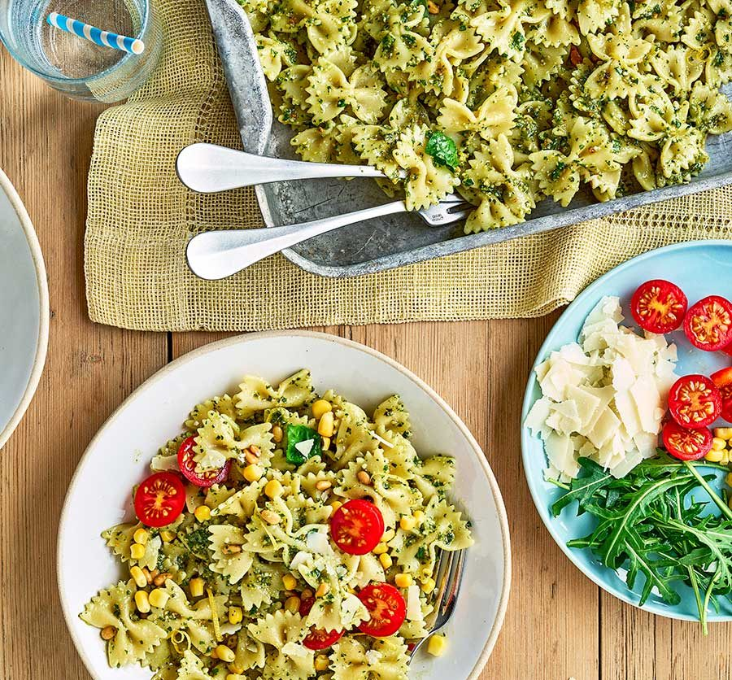
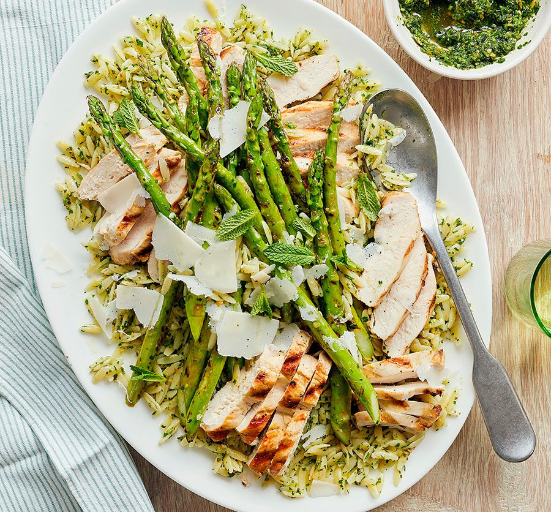

Easy Dinner Recipes Everyone Will Love
Delicious dinner recipes you can make TONIGHT!
_______________________
(1)
pesto pasta salad

⌛ Cook:15 mins
Ingredients :
- 400g farfalle pasta
- 3 tbsp olive oil
- 3 tbsp olive oil
- 5 tbsp pesto (see recipe, right and below, if you want to make your own)
- 10 large basil leaves
- 10 large basil leaves
- 50g parmesan or vegetarian alternative, shaved
- halved cherry tomatoes, drained sweetcorn, peas, rocket
lnstructions:
- Cook the pasta following pack instructions, then drain and toss in 1 tbsp of the oil. Transfer to a large bowl and set aside to cool, tossing occasionally so it doesn’t stick.
- Toast the pine nuts in a dry frying pan over a low heat, constantly moving them for 4-5 mins until browned. When the pasta has completely cooled, toss through the pesto, toasted pine nuts, remaining olive oil, basil, lemon zest and juice, and the tomatoes, sweetcorn, peas and rocket, if using. Season, then scatter over the parmesan and serve.
(2)
Chicken pesto orzo salad

⌛ CooK Time : 15min
Ingredients :
- 2 boneless, skinless chicken breasts
- 1 lemon, zested and juiced
- 3 garlic cloves, 2 crushed, 1 left whole
- 1 tbsp olive oil
- 25g flaked almonds
- large bunch of flat-leaf parsley
- small bunch of basil
- small bunch of mint, leaves picked
- 25g parmesan, grated, plus extra shaved parmesan to serve
- 100ml extra virgin olive oil, plus a drizzle to serve
- 250g orzo
- 16 asparagus spears
Instructions :
- Put the chicken breasts on a board and cover with a sheet of baking parchment. Use a rolling pin or meat mallet to bash to an even thickness of about 2cm, being careful not to break the chicken into pieces
- Combine the lemon zest, crushed garlic, olive oil and some seasoning in a medium bowl, then add the chicken and turn in the marinade to coat. Transfer to the fridge while you make the pesto.
- Toast the flaked almonds in a dry frying pan over a medium heat for 2-3 mins, shaking the pan often until the almonds are golden brown. Tip into a small food processor or blender. Peel the whole garlic clove and tip this into the food processor along with the parsley, basil, most of the mint leaves, the parmesan, extra virgin olive oil and lemon juice. Season, then blitz to a fine texture.
- Cook the orzo in a large pan of boiling salted water following the pack instructions, or until al dente. Heat a griddle pan over a medium-high heat and cook the marinated chicken for 4-5 mins on each side until cooked through with char lines. Drain the orzo and transfer the chicken to a plate to rest.
- Drizzle the asparagus spears with a little extra virgin olive oil and season with salt, then griddle for 3 mins until just softened. Remove from the heat and set aside.
- Toss most of the pesto through the cooked orzo along with any resting juices from the chicken. The remaining pesto will keep covered in the fridge for up to five days. Slice the chicken breasts. Tip the orzo onto a large serving platter and pile the asparagus and chicken on top, then scatter with the remaining mint leaves, some parmesan shavings and a grinding of black pepper. Drizzle with a little extra virgin olive oil and serve warm.